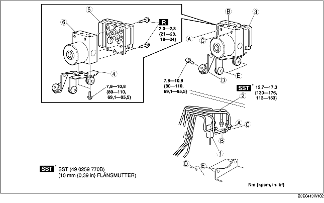

1. Demontera batteriet och batterihållaren. (Se DEMONTERING/MONTERING AV BATTERI [ZJ, Z6].) (Se DEMONTERING/MONTERING AV BATTERIET [LF].)
2. Vid vänsterstyrning, demontera reservslangen (fordon med manuell växellåda). (Se Observera vid demontering av reservslang.) (Se Observera vid demontering av kopplingsrör och kopplingens reservslang.) (Se Observera vid montering av reservslang.) (Se Observera vid montering av kopplingsrör och kopplingens reservslang.)
3. Demontera i den ordning som anges i tabellen.
4. Montera i omvänd ordning mot demonteringen.

.
1. Dra kontaktens kåpa uppåt i pilens riktning samtidigt som du trycker på fliken på kåpan.
2. Dra kontakten mot fordonets front och demontera den.
1. Sätt en markering på bromsröret och ABS HU/CM.
2. Sätt på skyddstejp på kontakten för att förhindra att bromsvätska tränger in.
3. Demontera bromsröret.
1. Flytta fästet i pilens riktning enligt figuren och demontera ABS HU/CM och fästet från karossen.
1. Placera markeringarna du gjorde före demonteringen mitt för varandra och montera bromsröret på ABS HU/CM enligt bilden.
1. När du anslutit kontakten, kontrollera att kontakten är helt itryckt.